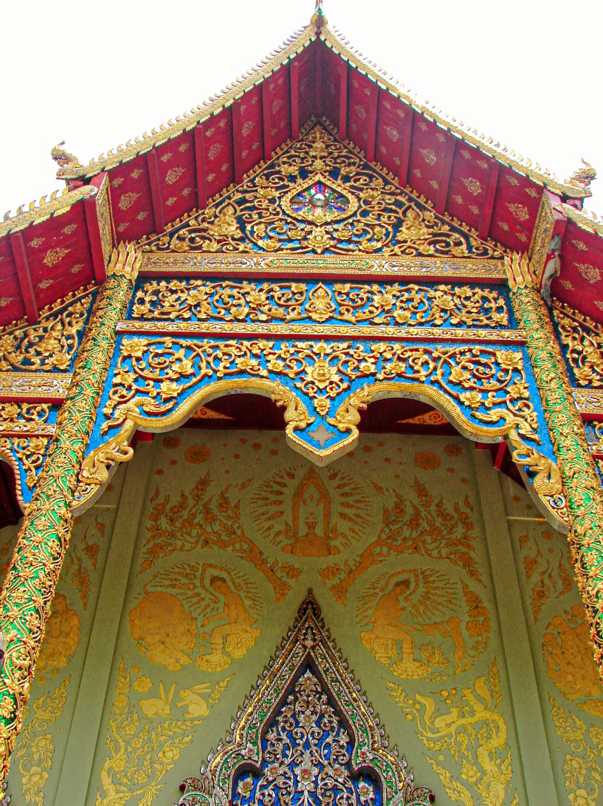

Long Neck Padong people are a unique hill tribe in Thailand as some of the women choose to wear a brass coil that over time elongates the neck as much as double. Originating in the Shan State in Burma these people are a small minority of the Karennin or Red Karen people of Burma.Long Neck Padong people are a unique hill tribe in Thailand as some of the women choose to wear a brass coil that over time elongates the neck as much as double. Originating in the Shan State in Burma these people are a small minority of the Karennin or Red Karen people of Burma.
There is much speculation about why the rings are worn by the women of this tribe, many will tell you it is simply tradition. They use to protect them from tiger attacks as the tiger will go for the neck. They start at a young age and add to the rings over time.

Doi Saket temple is an important pilgrimage site in Chiang Mai. It is located on a hill about twenty kilometers from the city.Follow THE PEACK ATV adventure

![Long Neck Padong people are a unique hill tribe in Thailand as some of the women choose to wear a brass coil that over time elongates the neck as much as double. Originating in the Shan State in Burma these people are a small minority of the Karennin or Red Karen people of Burma.
There is much speculation about why the rings are worn by the women of this tribe, many will tell you it is simply tradition. They use to protect them from tiger attacks as the tiger will go for the neck. They start at a young age and add to the rings over time.](../../assets/images/provinces/chiang-mai/gallery-3.webp)